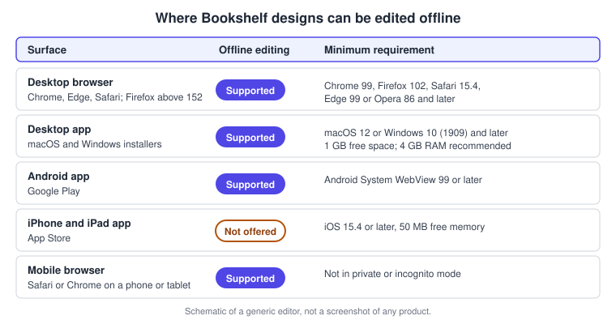
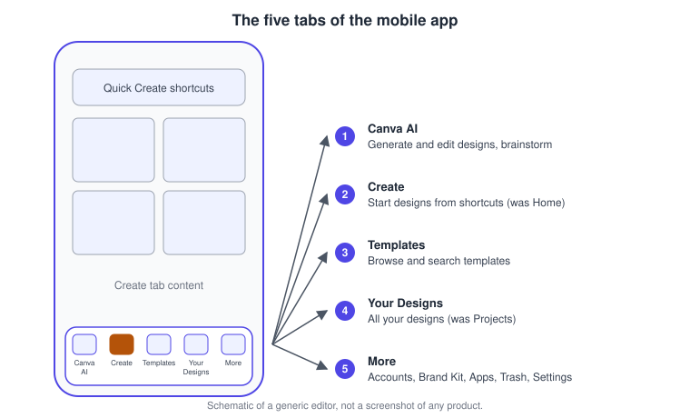
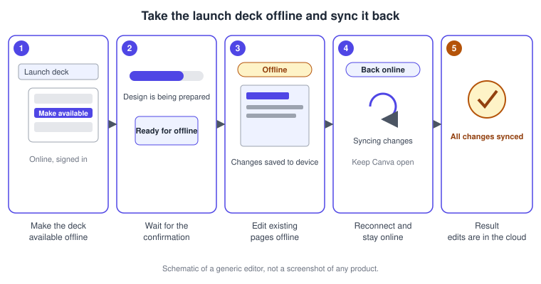
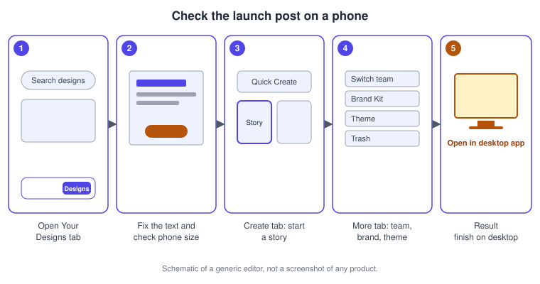

Desktop, Mobile and Offline
|
This content was generated with the assistance of AI and should be verified against the official documentation before being relied on in production. |
This page was checked against the official Canva Help Center on 2026-11-07. It covers the ways of reaching the Canva editor besides a desktop web browser: the Canva desktop app for macOS and Windows, the Canva mobile apps for Android, iPhone and iPad, and offline editing, which lets you keep working on existing designs without an internet connection. The product is the Canva editor itself; the desktop app, the mobile apps and the browser all open the same account, the same designs and the same Visual Suite.
Plans and status on 2026-11-07:
-
Plans. The apps are free to install and sign in to with any plan. The Help Center articles on offline editing do not restrict the feature to a plan, and the pricing page lists Canva Offline among its features, so check the pricing page at Canva pricing and your own account for the current plan grid. Administrators of Canva Enterprise, Canva for Districts and Canva for Campus can limit who may use offline designs.
-
AI tier. Not applicable to the apps themselves. AI features such as Magic Write and Background Remover need an internet connection, so they do not work offline.
-
Status. The desktop app, the mobile apps and offline editing are documented as generally available. The new mobile navigation is rolling out gradually, so what you see in the app can differ from the Help Center screenshots.
The running example is Bookshelf, the book catalogue and reading-list app designed in the Figma sub-section. Its launch campaign is built in Canva, and this page follows one working day: planning on a laptop, fixing the launch deck on a train with no signal, and checking a social post on a phone.
One account, several surfaces
Everything you make is saved to your Canva account, not to a device. A design started in a browser opens in the desktop app and on a phone after you sign in with the same account. The surfaces differ in how they are installed, which hardware they need and, above all, in what they can do without a connection.

| Surface | Strengths | Limits |
|---|---|---|
Desktop browser (canva.com) |
Nothing to install; the latest features reach it first; offline editing in Chrome, Edge and Safari, and in Firefox above version 152 |
Needs a current browser with JavaScript enabled; offline editing is not available in private or incognito mode |
Desktop app (macOS, Windows) |
Gives access to the same features as the browser; system notifications; offline editing; Memory Saver for long sessions |
Must be kept up to date; a few features are described as browser-first, so try the browser when something is missing |
Android app |
Quick editing, camera and gallery access, offline editing |
A smaller screen; some desktop features, such as scheduling Instagram posts in the Content Planner, are desktop-only |
iPhone and iPad app |
Quick editing and publishing on the go |
Offline editing is not available |
Mobile browser |
No install; offline editing and offline presenting are possible |
Not the full editor experience of the apps |
The Canva desktop app
The desktop app is a single download for each operating system. The macOS download supports Apple silicon and Intel processors, and the Windows download supports 32-bit and 64-bit processors, so there is no need to choose a variant. The Help Center describes it as giving access to the same features and functionality as the browser.
Minimum requirements
| Item | macOS | Windows |
|---|---|---|
Operating system |
macOS 12 (Monterey) or higher |
Windows 10 (version 1909) or higher |
Processor |
64-bit Intel or Apple M1 |
At least 1 GHz dual-core |
Memory |
2 GB, 4 GB recommended |
1 GB, 4 GB recommended |
Free disk space |
1 GB |
1 GB |
The same article asks for a stable connection that uses TLS 1.2 or later, because TLS 1.0 and 1.1 are not supported.
Notifications
With the desktop app, system notifications tell you when a design or folder is shared with you, when you are mentioned or someone replies to your comment, when you are assigned a task or your task is resolved, and when there are new comments on designs you own. People on Canva Teams and Canva Education plans also receive approval and access-request notifications for their own team. To turn them on, open System Settings (macOS) or Settings and System (Windows), go to Notifications and allow Canva.
Updates
When an update is available, the app shows Update App in the top corner. Selecting it and then Update Canva App closes the app and relaunches it once the update is installed. Outdated versions can stop working: for managed installations, Canva states that it may disable versions older than six months, or any version at all when a critical bug or vulnerability is found.
Memory Saver
Long sessions with many tabs can use a lot of memory. The app has two protections:
-
Urgent Memory Saver is always on and pauses tabs when the computer is low on memory.
-
Proactive Memory Saver is on by default and pauses inactive tabs before memory runs low. It can be switched off in Settings, then App Performance.
A paused tab shows a dotted circle; selecting the tab brings it back.
Open a browser page in the app
From Canva in a browser, open the account menu from your profile icon and choose Open in desktop app. If the app is installed, choose Open Canva app; if not, the same dialog offers the macOS and Windows downloads.
Troubleshooting the app
The Help Center suggests, in order: try the same feature in a browser, update the app, update the operating system, reset the app (on Windows, Settings, Apps, Advanced options, Reset; on macOS, remove the Canva folders from the user Library but keep the application itself; no designs are lost), and as a last resort force-quit the app, which can lose unsaved changes.
The MSIX installer for organisations
For Windows fleets, Canva publishes a Microsoft App Package (MSIX) installer in 64-bit and 32-bit variants. It supports Windows 10 and later and can be delivered with Microsoft Intune, Microsoft Endpoint Configuration Manager, PowerShell cmdlets or App Installer. The two installation contexts use the standard Windows commands:
# Install for the current user only
Add-AppxPackage -Path "C:\path\to\installer.msix"
# Install for all current and new users through provisioning
Add-AppxProvisionedPackage -Online -SkipLicense -PackagePath "C:\path\to\installer.msix"The package works with the standard uninstall cmdlets as well. Automatic updates through the MSIX mechanism are available on Windows 11 21H2 and later and are on by default. Where they are unavailable or disabled, administrators are expected to track new versions through Canva’s RSS feed and roll them out promptly.
The mobile apps
Canva offers apps for Android (Google Play) and for iPhone and iPad (App Store). The Android app needs Android System WebView version 99 or higher, and the iOS app needs iOS 15.4 or higher and at least 50 MB of free memory. Older app versions stop being supported, so keep the app updated. The Samsung Galaxy Store listing was removed on 2025-06-30: an existing installation keeps working but receives no updates or support, so reinstall from Google Play, use a browser or use the desktop app. Designs are never lost by switching, because they live in the account.
Canva Classic and Canva Lite
The Help Center now names two mobile experiences, Canva Classic and Canva Lite. They differ in which features are available. For example, quick video creation from templates is currently available only in Canva Classic on iOS and Android and not yet in Canva Lite, and the same article says the feature is rolling out gradually. Because the split changes from release to release, treat a missing feature on a phone as a possible app-version difference first, and open the design in a browser or the desktop app to finish the work.
The five tabs
The mobile app is organised in five tabs along the bottom of the screen:

-
Canva AI generates and edits designs, images and videos and helps you brainstorm. Depending on the design type, it opens the design in the editor or shows generated designs to pick from; Use Canva Editor continues in the full editor.
-
Create starts new designs from Quick Create shortcuts. It replaces the former Home tab, so recent designs are no longer shown there.
-
Templates lets you browse by category or search for a template type, then customise it in the editor.
-
Your Designs lists all your designs, with recent work first, and replaces the former Projects tab. A dropdown next to the page title filters the list, and a search bar finds a design by name.
-
More combines the account switcher, the team or school switcher, product shortcuts, Settings, light, dark or system theme, Help and feedback, Brand Kit, Apps, Design School, Trash, and the Canva Print cart.
If a tab, your profile photo or the Print cart is not where an article says, the navigation is probably still rolling out to your account: look in More. The old menu cannot be switched back on.
Desktop and mobile differences that matter
-
Layout. The desktop and browser editor has the side panel, quick actions toolbar and edit panel described in Editor Tour; the apps reorganise the same tools for touch.
-
Shortcuts. Keyboard shortcuts exist only where there is a keyboard; see the table below.
-
Scheduling. Some publishing steps, such as scheduling Instagram posts in the Content Planner, are desktop-only; see Social Media and the Content Planner.
-
Presenting. Offline presenting works in a desktop browser, in the Android app and in a phone browser, but not in the iPhone and iPad app.
-
Navigation names. Older tutorials mention Home and Projects tabs. They are now Create and Your Designs.
Offline editing
Offline editing lets you work on designs you have prepared in advance, then synchronises the changes when the connection returns. It must be set up while online, and it works per device.
Where it works
-
Supported: Chrome, Edge and Safari on the desktop, Firefox above version 152, the Canva desktop app, the Android app and mobile browsers.
-
Not supported: the iPhone and iPad apps, Firefox versions 149, 150 and 151, and private or incognito mode.
The rules to know first
-
Make each design available offline first, while online. Designs enabled for offline use are available only on that device.
-
You can only edit existing designs. New designs cannot be created offline.
-
Changes are stored locally on the device and sync automatically after you reconnect.
-
Do not sign out while online, because this removes offline designs.
-
Avoid adding video or audio offline: it can leave broken media or stop changes from saving.
-
Keep about 2 GB of free space on the device.
The time limit is stated differently in different articles. The offline editing setup article says you can work offline for up to 14 days; the article on managing offline storage and the sync troubleshooting article say 7 days, and the latter adds that after 7 days you should reconnect within 24 hours and keep Canva open until syncing completes. Plan for the shorter figure and reconnect well before it.
What works offline and what does not
| Works offline | Needs an internet connection |
|---|---|
Editing text: font, size, alignment and formatting |
Templates and elements from Canva’s library |
Moving, resizing and adjusting elements already in the design |
Sharing, sending comments and real-time collaboration |
Changing colours and layouts; adding pages from existing layouts or custom sizes |
Uploading audio or video files |
Basic photo editing and filters, drawing, shapes, lines, grids, tables, frames and charts |
AI features such as Magic Write and Background Remover |
Uploading images from the device (JPEG, PNG, HEIC/HEIF, WebP, SVG, GIF), each under 50 MB |
Brand Kit elements and new uploads from the homepage |
Applying animations to elements; viewing and reordering layers |
Video editing, embedded content such as YouTube, downloading or exporting, creating new designs |
Videos and embedded content appear as static previews offline and load again when you reconnect. You can read the comments on a design you prepared, filter by For you and draft replies, but you cannot send, resolve, delete or react to comments offline; after reconnecting, the Send button is enabled again, and a draft is lost if you refreshed or closed the page.
Where offline designs live
Designs available offline are listed under Available offline on the homepage, under Projects, and at canva.com/offline-designs. To free space, choose Remove offline availability on a single design, or open Settings from the profile menu, then Data and storage, then Offline, and choose Remove offline designs or Delete all offline data. Removing offline access never deletes the design from your account.
The messages you will see
| Message | Meaning |
|---|---|
Making available offline |
The design is being prepared; wait for it to finish |
Ready for offline use |
You can edit without internet |
Failed to make available offline |
Try again while connected |
Changes saved to device |
Your edits are stored locally |
Not available offline |
The design was not enabled for offline use |
Syncing changes |
Your edits are uploading |
All changes synced |
Everything is saved in your account |
Sync failed |
The edits are still on your device; keep Canva open and retry |
Collaboration and conflicts
If someone else edits the same design while you are offline, Canva merges the changes when each person reconnects and helps resolve conflicts. When your edits appear to be overwritten, open File, then Version history, look for entries with offline timestamps, and either restore your version or make a copy to keep both. Agree beforehand who works offline on a shared design.
Offline presenting
A presentation made available offline can be presented without a connection: turn off the connection, go to Projects, choose Available offline, open the presentation and select Present. Slides, Presenter view, speaker notes and the timer work; music does not play, and embedded content such as YouTube, Spotify links and other Canva designs appear as placeholders. Offline presenting works on mobile web (Safari or Chrome) but not in the mobile app. Administrators on Enterprise, Canva for Districts and Canva for Campus can set Who can use offline designs to Admins only or Everyone, which is Everyone by default. See Presentations for the presentation modes.
Keyboard shortcuts
Shortcuts apply to the desktop app and the browser. The full list is in the Help Center; these are the ones used most when working through the Bookshelf campaign.
| Action | macOS | Windows |
|---|---|---|
Undo |
Cmd + Z |
Ctrl + Z |
Save |
Cmd + S |
Ctrl + S |
Show or hide the side panel |
Cmd + / |
Ctrl + / |
Quick actions |
/ or Cmd + E |
/ or Ctrl + E |
Find and replace text |
Cmd + F |
Ctrl + F |
Cmd + P |
Ctrl + P |
The shortcut reference is covered in Keyboard Shortcuts and Quick Actions.
Procedure: prepare the Bookshelf launch deck for the train
Before leaving the office, make the launch presentation available offline on the laptop, and check that it is ready.

-
While online and signed in, open the Bookshelf launch deck in the Canva desktop app or in Chrome, Edge or Safari.
-
Select the Cloud icon and choose Make available offline, or on the homepage open the design’s More menu and choose Make available offline.
-
Wait for the progress indicator to finish and the Ready for offline use confirmation to appear.
-
Open Projects, then Available offline, and check that the deck is listed. Check the device has about 2 GB of free space.
-
Go offline. Open the deck from Available offline and edit the existing pages: rewrite the speaker notes, change the colours and replace an image with one uploaded from the device (under 50 MB).
-
Skip video, audio, AI tools, sharing and downloads until you are back online.
-
Reconnect, keep Canva open and wait for All changes synced before closing the app or signing out.
Procedure: check the launch post on a phone
Use the Android or iPhone app to review a design and start a new one.

-
Open the app and tap Your Designs. Search for the Book of the week post.
-
Open the post, make a small text fix and check how it looks at phone size.
-
Tap Create and choose a Quick Create shortcut for a story, to start a new design from the brand template.
-
Tap More to switch team, open Brand Kit or the Print cart, or switch to dark mode.
-
To keep using a large or complex layout, open the same design in the desktop app and choose Open in desktop app from the browser’s account menu.
Common mistakes
-
Expecting to create a new design offline. Only designs made available offline beforehand can be edited.
-
Signing out before syncing. Signing out, clearing site data or refreshing while offline can remove offline designs before they sync.
-
Using private or incognito mode. Offline editing is not supported there.
-
Adding video or audio offline. This can break media, lose changes or crash the design when you reconnect; add videos while online.
-
Looking for offline editing on iPhone or iPad. The apps do not offer it; use a laptop or an Android device.
-
Relying on the 14-day figure. Other Help Center articles say 7 days, so reconnect early.
-
Expecting the same app everywhere. Canva Classic and Canva Lite differ, and some features reach the desktop and browser first.
-
Keeping an old Samsung build. The Galaxy Store version stopped receiving updates after 2025-06-30.
-
Looking for the Home and Projects tabs. They are now Create and Your Designs.
Recent changes
| Date | Change |
|---|---|
2025-06-30 |
Canva was removed from the Samsung Galaxy Store; existing installations get no updates or support |
2025-10-30 |
Canva Business replaced Canva Teams for new sign-ups |
2026-11-07 |
The mobile app is documented with five tabs (Canva AI, Create, Templates, Your Designs, More), rolling out gradually |
2026-11-07 |
Offline editing is documented for desktop browsers, the desktop app, the Android app and mobile browsers; the iPhone and iPad apps are not supported |
Corrections to older guides
The two books consulted for this sub-section describe Canva as a browser tool with one phone app and a Home tab; they were written before several changes.
| Older statement | Current state on 2026-11-07 |
|---|---|
The phone app has Home, Projects and similar tabs |
The tabs are now Canva AI, Create (was Home), Templates, Your Designs (was Projects) and More |
There is one Canva mobile app |
The Help Center names Canva Classic and Canva Lite, which differ in features |
Canva needs a connection at all times |
Existing designs can be edited offline on supported surfaces after you make them available offline |
The side panel and toolbar of the older editor |
The editor was redesigned; see Editor Tour |
Teams is the paid team plan |
Canva Business replaced Teams for new sign-ups on 2025-10-30 |